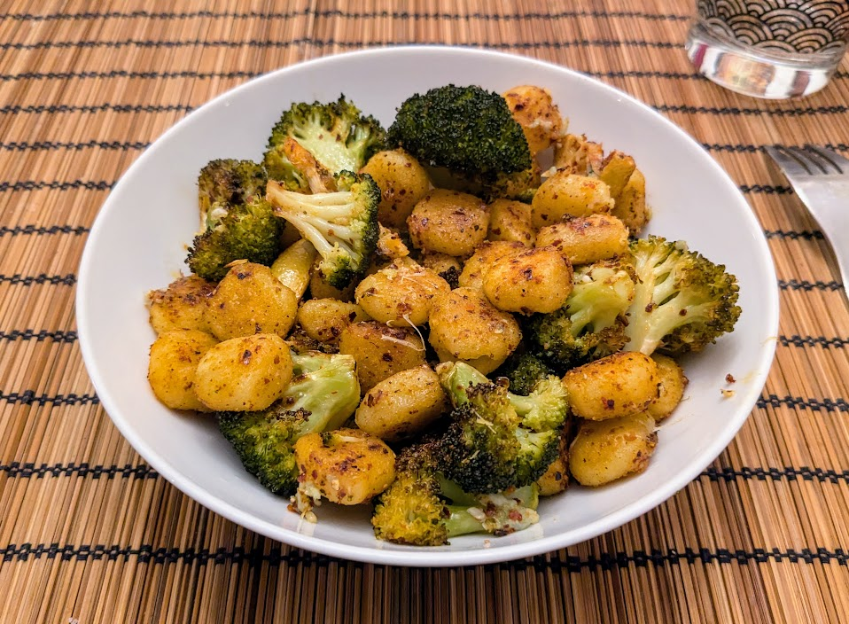

Gnocchis rôtis aux brocolis

Pour 3 personnes :
- 500g de gnocchis frais (le genre qu'on trouve au supermarché)
- Deux gros brocolis, ou trois petits
- Un citron non traité, plus un demi-citron
- Une cuillère à soupe d'ail en poudre
- Une cuillère à café d'oignon en poudre
- Une cuillère à soupe de gochugaru, ou de paprika fumé, ou de paprika doux
- Une demi-tête d'ail
- 150g de parmesan
- Sel, poivre, huile d'olive
- Couper le brocolis en florets. Laver le citron, le couper en tranches d'un demi-centimètre environ, puis enlever les pépins de chaque tranche et couper chaque tranche en deux.
- Faire préchauffer le four à 200°C. Mettre les gnocchis, le brocolis, le citron, l'ail en poudre, l'oignon en poudre, et le gochugaru dans un gros saladier. Saler, poivrer, et arroser d'huile d'olive généreusement, bien mélanger, et disposer sur deux plaques de four.
- Enfourner 25 minutes, en échangeant les plaques de place à mi-parcours. Il faut que les gnocchis et les brocolis aient pris des couleurs.
- Pendant ce temps, éplucher et écraser l'ail, râper le parmesan, et presser le demi-citron.
- Lorsque la cuisson est terminée, verser le contenu des deux plaques de cuisson dans le saladier. Ajouter l'ail écrasé, bien mélanger, puis retirer les citrons (si il en reste un peu, c'est pas très grave) et tout remettre sur une plaque de four.
- Mettre le four en mode grill à feu fort. Parsemer du parmesan sur le mélange, et faire griller deux minutes jusqu'à ce que le fromage fondu commence tout juste à prendre des couleurs.
- Servir immédiatement, avec un trait de jus de citron.
Retour à la liste des recettes